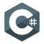
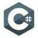

Présentations
Tout d'abord, vous pourrez me découvrir et qu'est-ce que le BTS SIO
Présentations
Tout d'abord, vous pourrez me découvrir et qu'est-ce que le BTS SIO
Mon expérience
Ensuite, vous pourrez parcourir mon expérience scolaire et extra-scolaire dans le domaine du développement
Mon parcours
De plus, vous trouverez mon parcours scolaire à partir du Lycée
Mon CV
Pour conclure, vous trouverez toutes les informations me concernant
Bonjour, je me prénomme Virgile ESTÈVE, je suis âgé de 19 ans et je suis actuellement étudiant en première année de BTS SIO (Services Informatiques aux Organisations). Je suis passionné d'informatique depuis mon plus jeune âge, auquel j'ai commencé à jouer et à m'intéresser aux jeux vidéo. J'ai rejoint le monde du développement il y a quelques années et mon plus grand souhait est de m'investir dans le développement de mes compétences et capacités, dans le but de devenir un développeur full-stack accompli car cela me semble être ma vocation professionnelle.
Le BTS SIO (Service Informatique aux Organisations) est un programme de niveau bac+2, qui forme des informaticiens aussi bien doués pour le développement que pour l’administration et la maintenance d’un réseau informatique. Le BTS SIO se décompose en deux options distinctes : Option SISR et Option SLAM. L'option SISR (Solution d’Infrastructure Système et Réseau) est une option du BTS SIO qui a pour but de former des techniciens réseaux polyvalents. Les lauréats de ce programme ont toutes les compétences nécessaires pour la gestion et la maintenance du réseau d’une entreprise. Le BTS SIO SLAM (Solutions Logicielles et Application Métiers) est un parcours dédié aux passionnés du développement web et logiciel. Durant ces deux années d’études, les étudiants apprennent à rédiger un cahier des charges, développer des applications et assurer leur intégration dans les systèmes informatisés de la société.
Durant mes années estudiantines, au Lycée, j’ai intégré deux établissements différents, à savoir le Lycée Notre-Dame et le Lycée Saint-Bénigne. En classe de seconde, j’étais en filière générale sans aucune option informatique. C’est à cette époque que j’ai découvert l’option SIG (Systèmes d'Informations et de Gestion) dans la filière STMG (Sciences et Technologies du Management et de la Gestion) que l’on pouvait choisir en Terminale.
J’ai donc fait le choix, qui correspondait à mes attentes, de changer d’établissement pour aller en STMG en classe de première (spécialités management, droit/économie et sciences de gestion et numérique).
En Terminale, l’option SIG m'a permis d'apprendre la maîtrise des bases du développement grâce aux langages de programmation tels que l’HTML, le CSS et le SQL.
J’ai compris rapidement les principes de base de ces langages (excepté le SQL qui n'est pas ma compétence première) et je me suis investi très sérieusement dans ce domaine. Dans le cadre du grand oral de Terminale, notre groupe d'étudiants avons édité notre propre site web à partir de templates et autres. Dans notre site web, nous avons regroupé notre choix d’orientation parcoursup, le choix de notre entreprise ainsi que la caractérisation de cette dernière. À la fin de mon année de Terminale, après l’obtention du BAC, je me suis donc dirigé vers ce BTS SIO (Services Informatiques aux Organisations) pour m'adapter à l'apprentissage de nouveaux langages de programmation et approfondir mes connaissances dans l’optique de devenir développeur.
 
